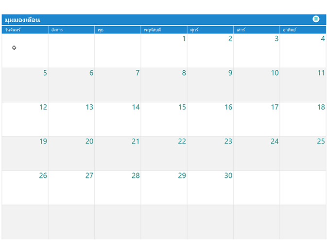

<!--
  Generated template for the EmployeeholidayPage page.

  See http://ionicframework.com/docs/components/#navigation for more info on
  Ionic pages and navigation.
-->
<ion-header>
    <ion-navbar>
        <ion-title>วันหยุดพนักงาน</ion-title>
    </ion-navbar>
</ion-header>

<ion-content padding>
    <!--  -->
    <ionic-calendar-date-picker (onSelect)="dateSelected($event)" 
    [itemSelectedStyle]="{'color': 'red', 'font-weight': 'bold'}">
    </ionic-calendar-date-picker>
    
       
    	
    
</ion-content>